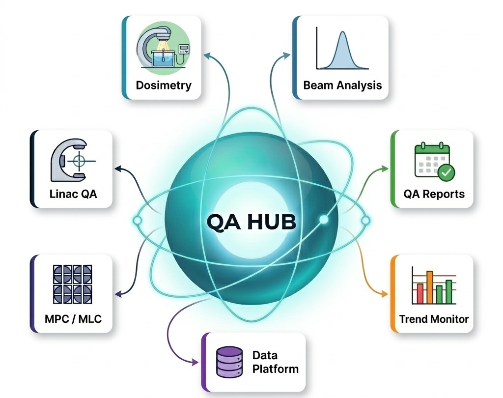
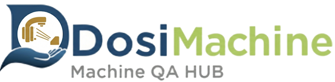

✦ Integrated Quality Assurance Platform

DosiCare · Advanced QA Technologies
선형가속기 장비 QA, 영상 품질 관리, 호흡동조 QA, 선량 교정, 플랜 검토를 한 프로그램에서 분석하고
결과를 PDF 리포트와 추세 그래프, 병원 점검표로 남기는 QA 통합 프로그램입니다.
결과를 PDF 리포트와 추세 그래프, 병원 점검표로 남기는 QA 통합 프로그램입니다.
13
Machine QA 기능
10
Image QA 팬텀
5
Device QA 도구
6
AI 엔진 선택